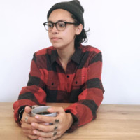

About Me
User Analyst: Bridging the communication between the product team and the users. Reviewing business functions, gathering information and evaluating output requirements to ensure the quality of our product. A fundamental goal is to get the initial high-level vision of the project into something realistic. Working as a team to take our backlog items to Done within a two-week sprint.
East of Oakland born and raised, I attended Unversity at Sonoma State where I earned a BA in Communications & a minor in Political Theory. I spent a year in Italy studying the European Union. I returned to the bay to graduate and I then began my start up journey. Originally falling into a marketing and outreach position I bounced around from job to job and realized that marketing wasnt for me. I took a part time customer support job that turned into a career. It's been 4 years with Honeyfund and I'm really enjoying my role on the product team.